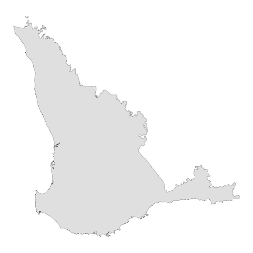
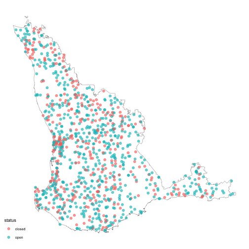

weatherOz for DPIRD
Rodrigo Pires, Anna Hepworth, Rebecca O’Leary and Adam H. Sparks
Source:vignettes/weatherOz_for_DPIRD.Rmd
weatherOz_for_DPIRD.RmdAbout DPIRD Data
From the DPIRD Weather Website’s “About” Page.
The Department of Primary Industries and Regional Development’s (DPIRD) network of automatic weather stations and radars throughout the state provide timely, relevant and local weather data to assist growers and regional communities make more-informed decisions.
The weather station data includes air temperature, humidity, rainfall, wind speed and direction, with most stations also measuring incoming solar radiation to calculate evaporation. This website includes dashboards for each station to visualise this data.
Data from the DPIRD API are licenced under the Creative Commons Attribution 3.0 Licence (CC BY 3.0 AU).
A Note on API Keys
All examples in this vignette assume that you have stored your API key in your .Renviron file. See Chapter 8 in “What They Forgot to Teach You About R” by Bryan et al. for more on storing details in your .Renviron if you are unfamiliar.
Working With DPIRD Data
Three functions are provided to streamline fetching data from the DPIRD Weather 2.0 API endpoints.
-
get_dpird_extremes(), which returns the recorded extreme values for the given station in the DPIRD weather station network.; -
get_dpird_minute(), which returns weather data in minute increments for stations in the DPIRD weather station network with only the past two years being available; and -
get_dpird_summaries(), which returns weather data in 15 and 30 minute, hourly, daily, monthly or yearly summary values for stations in the DPIRD weather station network.
Getting Extreme Weather Values
The get_dpird_extremes() function fetches and returns
nicely formatted individual extreme weather summaries from the DPIRD
Weather 2.0 API. You must provide a station_code and
API_key, the other arguments, values and
include_closed are optional.
Available Values for Extreme Weather
- all (which will return all of the following values),
- erosionCondition,
- erosionConditionLast7Days,
- erosionConditionLast7DaysDays,
- erosionConditionLast7DaysMinutes,
- erosionConditionLast14Days,
- erosionConditionLast14DaysDays,
- erosionConditionLast14DaysMinutes,
- erosionConditionMonthToDate,
- erosionConditionMonthToDateDays,
- erosionConditionMonthToDateMinutes,
- erosionConditionMonthToDateStartTime,
- erosionConditionSince12AM,
- erosionConditionSince12AMMinutes,
- erosionConditionSince12AMStartTime,
- erosionConditionYearToDate,
- erosionConditionYearToDateDays,
- erosionConditionYearToDateMinutes,
- erosionConditionYearToDateStartTime,
- frostCondition,
- frostConditionLast7Days,
- frostConditionLast7DaysDays,
- frostConditionLast7DaysMinutes,
- frostConditionLast14Days,
- frostConditionLast14DaysDays,
- frostConditionLast14DaysMinutes,
- frostConditionMonthToDate,
- frostConditionMonthToDateDays,
- frostConditionMonthToDateMinutes,
- frostConditionMonthToDateStartTime,
- frostConditionSince9AM,
- frostConditionSince9AMMinutes,
- frostConditionSince9AMStartTime,
- frostConditionTo9AM,
- frostConditionTo9AMMinutes,
- frostConditionTo9AMStartTime,
- frostConditionYearToDate,
- frostConditionYearToDate,
- frostConditionYearToDateMinutes,
- frostConditionYearToDateStartTime,
- heatCondition,
- heatConditionLast7Days,
- heatConditionLast7DaysDays,
- heatConditionLast7DaysMinutes,
- heatConditionLast14Days,
- heatConditionLast14DaysDays,
- heatConditionLast14DaysMinutes,
- heatConditionMonthToDate,
- heatConditionMonthToDateDays,
- heatConditionMonthToDateMinutes,
- heatConditionMonthToDateStartTime,
- heatConditionSince12AM,
- heatConditionSince12AMMinutes,
- heatConditionSince12AMStartTime,
- heatConditionYearToDate,
- heatConditionYearToDateDays,
- heatConditionYearToDateMinutes, and
- heatConditionYearToDateStartTime
Example 1: Get All Extremes for Northam, WA
In the first example, we illustrate how to fetch all extreme values available for Northam.
library(weatherOz)
(extremes <- get_dpird_extremes(
station_code = "NO"
))
#> Key: <station_code>
#> station_code longitude latitude frost_condition_since9_am_minutes
#> <fctr> <num> <num> <int>
#> 1: NO 116.6942 -31.65161 0
#> frost_condition_since9_am_start_time frost_condition_to9_am_minutes
#> <POSc> <int>
#> 1: <NA> 0
#> frost_condition_to9_am_start_time frost_condition_last7_days_minutes
#> <POSc> <int>
#> 1: <NA> 0
#> frost_condition_last7_days_days frost_condition_last14_days_minutes
#> <int> <int>
#> 1: 0 0
#> frost_condition_last14_days_days frost_condition_month_to_date_minutes
#> <int> <int>
#> 1: 0 0
#> frost_condition_month_to_date_start_time frost_condition_month_to_date_days
#> <POSc> <int>
#> 1: <NA> 0
#> frost_condition_year_to_date_minutes frost_condition_year_to_date_start_time
#> <int> <POSc>
#> 1: 0 <NA>
#> frost_condition_year_to_date_days heat_condition_since12_am_minutes
#> <int> <int>
#> 1: 0 0
#> heat_condition_since12_am_start_time heat_condition_last7_days_minutes
#> <POSc> <int>
#> 1: <NA> 3486
#> heat_condition_last7_days_days heat_condition_last14_days_minutes
#> <int> <int>
#> 1: 6 4985
#> heat_condition_last14_days_days heat_condition_month_to_date_minutes
#> <int> <int>
#> 1: 11 2699
#> heat_condition_month_to_date_start_time heat_condition_month_to_date_days
#> <POSc> <int>
#> 1: 2026-02-01 10:47:00 4
#> heat_condition_year_to_date_minutes heat_condition_year_to_date_start_time
#> <int> <POSc>
#> 1: 16751 2026-01-01 09:03:00
#> heat_condition_year_to_date_days erosion_condition_since12_am_minutes
#> <int> <int>
#> 1: 32 0
#> erosion_condition_since12_am_start_time erosion_condition_last7_days_minutes
#> <POSc> <int>
#> 1: <NA> 0
#> erosion_condition_last7_days_days erosion_condition_last14_days_minutes
#> <int> <int>
#> 1: 0 0
#> erosion_condition_last14_days_days erosion_condition_month_to_date_minutes
#> <int> <int>
#> 1: 0 0
#> erosion_condition_month_to_date_start_time erosion_condition_month_to_date_days
#> <POSc> <int>
#> 1: <NA> 0
#> erosion_condition_year_to_date_minutes erosion_condition_year_to_date_start_time
#> <int> <POSc>
#> 1: 0 <NA>
#> erosion_condition_year_to_date_days
#> <int>
#> 1: 0Example 2: Get Selected Extremes for Northam, WA
Fetch only soil erosion extreme conditions for Northam, WA. The
documentation for get_dpird_extremes() contains a full
listing of the values that are available to query from this API
endpoint.
library(weatherOz)
(
extremes <- get_dpird_extremes(
station_code = "NO",
values = "erosionCondition"
)
)
#> Key: <station_code>
#> station_code longitude latitude erosion_condition_since12_am_minutes
#> <fctr> <num> <num> <int>
#> 1: NO 116.6942 -31.65161 0
#> erosion_condition_since12_am_start_time erosion_condition_last7_days_minutes
#> <POSc> <int>
#> 1: <NA> 0
#> erosion_condition_last7_days_days erosion_condition_last14_days_minutes
#> <int> <int>
#> 1: 0 0
#> erosion_condition_last14_days_days erosion_condition_month_to_date_minutes
#> <int> <int>
#> 1: 0 0
#> erosion_condition_month_to_date_start_time erosion_condition_month_to_date_days
#> <POSc> <int>
#> 1: <NA> 0
#> erosion_condition_year_to_date_minutes erosion_condition_year_to_date_start_time
#> <int> <POSc>
#> 1: 0 <NA>
#> erosion_condition_year_to_date_days
#> <int>
#> 1: 0Getting Minute Data
This function fetches nicely formatted minute weather station data
from the DPIRD Weather 2.0 API for a maximum 24-hour period. You must
provide a station_code and API_key, the other
arguments, start_date_time, minutes and
values are optional.
Available Values for Minute Data
- all (which will return all of the following values),
- airTemperature,
- dateTime,
- dewPoint,
- rainfall,
- relativeHumidity,
- soilTemperature,
- solarIrradiance,
- wetBulb,
- wind,
- windAvgSpeed,
- windMaxSpeed, and
- windMinSpeed
Example 3: Get All Minute Data for the Past 24 Hours
library(weatherOz)
(
min_dat <- get_dpird_minute(
station_code = "NO"
)
)
#> Key: <station_code>
#> station_code date_time air_temperature relative_humidity
#> <fctr> <POSc> <num> <num>
#> 1: NO 2026-02-04 11:41:00 26.0 31.4
#> 2: NO 2026-02-04 11:42:00 26.1 31.2
#> 3: NO 2026-02-04 11:43:00 26.1 31.6
#> 4: NO 2026-02-04 11:44:00 26.3 31.3
#> 5: NO 2026-02-04 11:45:00 26.3 31.3
#> ---
#> 1431: NO 2026-02-05 11:31:00 27.7 32.6
#> 1432: NO 2026-02-05 11:32:00 28.0 32.0
#> 1433: NO 2026-02-05 11:33:00 28.1 32.0
#> 1434: NO 2026-02-05 11:34:00 28.3 31.1
#> 1435: NO 2026-02-05 11:35:00 27.7 32.3
#> soil_temperature solar_irradiance rainfall dew_point wet_bulb wind_height
#> <num> <int> <int> <num> <num> <int>
#> 1: 38.9 1103 0 7.8 16.1 3
#> 2: 38.9 1103 0 7.8 16.1 3
#> 3: 39.0 1103 0 7.9 16.2 3
#> 4: 39.0 1103 0 8.0 16.3 3
#> 5: 39.0 1105 0 8.0 16.3 3
#> ---
#> 1431: 37.5 1096 0 9.8 17.6 3
#> 1432: 37.6 1097 0 9.8 17.7 3
#> 1433: 37.7 1097 0 9.9 17.7 3
#> 1434: 37.7 1097 0 9.6 17.7 3
#> 1435: 37.8 1099 0 9.7 17.5 3
#> wind_avg_speed wind_avg_direction_compass_point wind_avg_direction_degrees
#> <num> <char> <int>
#> 1: 14.72 SSE 163
#> 2: 16.24 SSE 161
#> 3: 11.74 SE 145
#> 4: 9.72 SSE 164
#> 5: 11.23 SSE 162
#> ---
#> 1431: 7.20 ESE 103
#> 1432: 6.70 E 96
#> 1433: 4.68 ESE 109
#> 1434: 7.20 SE 142
#> 1435: 11.23 SE 138
#> wind_min_speed wind_max_speed
#> <num> <num>
#> 1: 10.224 21.78
#> 2: 11.736 22.79
#> 3: 4.176 21.28
#> 4: 6.696 14.22
#> 5: 6.192 16.74
#> ---
#> 1431: 2.664 10.73
#> 1432: 1.656 13.72
#> 1433: 2.664 7.70
#> 1434: 3.168 15.23
#> 1435: 6.192 19.26Example 4: Get Specific Time and Date Data for Specific Values
If you wish to supply a specific start date and time and values, you may do so as shown here.
library(weatherOz)
(
min_dat_t_rad_wind <- get_dpird_minute(
station_code = "NO",
start_date_time = "2023-02-01 13:00:00",
minutes = 1440,
values = c("airTemperature",
"solarIrradiance",
"wind")
)
)
#> Key: <station_code>
#> station_code date_time air_temperature solar_irradiance wind_height
#> <fctr> <POSc> <num> <int> <int>
#> 1: NO 2023-02-01 13:00:00 29.7 1087 3
#> 2: NO 2023-02-01 13:00:50 29.4 1086 3
#> 3: NO 2023-02-01 13:01:40 29.5 1084 3
#> 4: NO 2023-02-01 13:02:30 29.5 1084 3
#> 5: NO 2023-02-01 13:03:20 29.6 1084 3
#> ---
#> 1436: NO 2023-02-02 12:55:00 30.2 1105 3
#> 1437: NO 2023-02-02 12:55:50 30.1 1104 3
#> 1438: NO 2023-02-02 12:56:40 30.0 1102 3
#> 1439: NO 2023-02-02 12:57:30 29.9 1102 3
#> 1440: NO 2023-02-02 12:58:20 30.1 1104 3
#> wind_avg_speed wind_avg_direction_compass_point wind_avg_direction_degrees
#> <num> <char> <int>
#> 1: 11.66 SE 139
#> 2: 10.80 SE 136
#> 3: 11.81 SSE 156
#> 4: 12.71 SE 133
#> 5: 12.96 SE 139
#> ---
#> 1436: 9.54 ESE 112
#> 1437: 9.90 ESE 120
#> 1438: 13.03 ESE 121
#> 1439: 10.91 E 93
#> 1440: 10.40 E 97
#> wind_min_speed wind_max_speed
#> <num> <num>
#> 1: 4.176 26.82
#> 2: 4.176 19.26
#> 3: 6.696 19.26
#> 4: 6.696 26.82
#> 5: 6.696 19.26
#> ---
#> 1436: 4.176 16.74
#> 1437: 4.176 19.26
#> 1438: 4.176 24.30
#> 1439: 6.696 21.78
#> 1440: 4.176 16.74Getting Summary Data
The function, get_dpird_summary(), fetches nicely
formatted minute weather station data from the DPIRD Weather 2.0 API for
a maximum 24-hour period. You must provide a station_code
and API_key, the other arguments,
start_date_time, minutes and
values are optional.
Available Values for Summary Data
- all (which will return all of the following values),
- airTemperature,
- airTemperatureAvg,
- airTemperatureMax,
- airTemperatureMaxTime,
- airTemperatureMin,
- airTemperatureMinTime,
- apparentAirTemperature,
- apparentAirTemperatureAvg,
- apparentAirTemperatureMax,
- apparentAirTemperatureMaxTime,
- apparentAirTemperatureMin,
- apparentAirTemperatureMinTime,
- barometricPressure,
- barometricPressureAvg,
- barometricPressureMax,
- barometricPressureMaxTime,
- barometricPressureMin,
- barometricPressureMinTime,
- battery,
- batteryMinVoltage,
- batteryMinVoltageDateTime,
- chillHours,
- deltaT,
- deltaTAvg,
- deltaTMax,
- deltaTMaxTime,
- deltaTMin,
- deltaTMinTime,
- dewPoint,
- dewPointAvg,
- dewPointMax,
- dewPointMaxTime,
- dewPointMin,
- dewPointMinTime,
- erosionCondition,
- erosionConditionMinutes,
- erosionConditionStartTime,
- errors,
- etoShortCrop,
- etoTallCrop,
- evapotranspiration,
- frostCondition,
- frostConditionMinutes,
- frostConditionStartTime,
- heatCondition,
- heatConditionMinutes,
- heatConditionStartTime,
- observations,
- observationsCount,
- observationsPercentage,
- panEvaporation,
- rainfall,
- relativeHumidity,
- relativeHumidityAvg,
- relativeHumidityMax,
- relativeHumidityMaxTime,
- relativeHumidityMin,
- relativeHumidityMinTime,
- richardsonUnits,
- soilTemperature,
- soilTemperatureAvg,
- soilTemperatureMax,
- soilTemperatureMaxTime,
- soilTemperatureMin,
- soilTemperatureMinTime,
- solarExposure,
- wetBulb,
- wetBulbAvg,
- wetBulbMax,
- wetBulbMaxTime,
- wetBulbMin,
- wetBulbMinTime,
- wind,
- windAvgSpeed, and
- windMaxSpeed
What You Get Back
This function returns a data.table with
station_code and the date interval queried together with
the requested weather variables in alphabetical order. Please note this
function converts date-time columns from Coordinated Universal Time
‘UTC’} to Australian Western Standard Time ‘AWST’. The first ten columns
will always be:
-
station_code, -
station_name, -
longitude, -
latitude, -
year, -
month, -
day, -
hour, -
minute, and ifmonthor finer is present, -
date(a combination of year, month, day, hour, minute as appropriate)
Example 5: Get Annual Rainfall Since 2017
Use the default value for end date (current system date) to get annual rainfall since 2017 until current year for Capel.
library(weatherOz)
(
annual_rain <- get_dpird_summaries(
station_code = "CL001",
start_date = "20170101",
interval = "yearly",
values = "rainfall"
)
)
#> Key: <station_code>
#> station_code station_name longitude latitude year rainfall
#> <fctr> <char> <num> <num> <int> <num>
#> 1: CL001 Capel 115.6376 -33.61576 2017 711.4
#> 2: CL001 Capel 115.6376 -33.61576 2018 822.0
#> 3: CL001 Capel 115.6376 -33.61576 2019 660.6
#> 4: CL001 Capel 115.6376 -33.61576 2020 862.4
#> 5: CL001 Capel 115.6376 -33.61576 2021 928.0
#> 6: CL001 Capel 115.6376 -33.61576 2022 670.4
#> 7: CL001 Capel 115.6376 -33.61576 2023 570.0
#> 8: CL001 Capel 115.6376 -33.61576 2024 786.4
#> 9: CL001 Capel 115.6376 -33.61576 2025 988.8
#> 10: CL001 Capel 115.6376 -33.61576 2026 0.6Example 6: Get Monthly Rainfall Since 2017
Use the default value for end date (current system date) to get monthly rainfall since 2017 until current year for Capel.
library(weatherOz)
(
monthly_rain <- get_dpird_summaries(
station_code = "CL001",
start_date = "20170101",
interval = "monthly",
values = "rainfall"
)
)
#> Key: <station_code>
#> station_code station_name longitude latitude year month date rainfall
#> <fctr> <char> <num> <num> <int> <int> <Date> <num>
#> 1: CL001 Capel 115.6376 -33.61576 2017 1 2017-01-01 0.0
#> 2: CL001 Capel 115.6376 -33.61576 2017 2 2017-02-01 0.0
#> 3: CL001 Capel 115.6376 -33.61576 2017 3 2017-03-01 59.6
#> 4: CL001 Capel 115.6376 -33.61576 2017 4 2017-04-01 0.0
#> 5: CL001 Capel 115.6376 -33.61576 2017 5 2017-05-01 84.0
#> ---
#> 106: CL001 Capel 115.6376 -33.61576 2025 10 2025-10-01 108.2
#> 107: CL001 Capel 115.6376 -33.61576 2025 11 2025-11-01 31.0
#> 108: CL001 Capel 115.6376 -33.61576 2025 12 2025-12-01 0.0
#> 109: CL001 Capel 115.6376 -33.61576 2026 1 2026-01-01 0.6
#> 110: CL001 Capel 115.6376 -33.61576 2026 2 2026-02-01 0.0Example 7: Get Daily Rainfall and Wind From Beginning of 2017 to End of 2018
Use the default value for end date (current system date) to get daily rainfall and wind records from 2017-01-01 to 2018-12-31 for Binnu. Note that the Binnu station has two wind heights, 3m and 10m.
library(weatherOz)
(
daily_wind_rain <- get_dpird_summaries(
station_code = "BI",
start_date = "20170101",
end_date = "2018-12-31",
interval = "daily",
values = c("rainfall",
"wind")
)
)
#> Key: <station_code>
#> station_code station_name longitude latitude year month day date
#> <fctr> <char> <num> <num> <int> <int> <int> <Date>
#> 1: BI Binnu 114.6958 -28.051 2017 1 1 2017-01-01
#> 2: BI Binnu 114.6958 -28.051 2017 1 2 2017-01-02
#> 3: BI Binnu 114.6958 -28.051 2017 1 3 2017-01-03
#> 4: BI Binnu 114.6958 -28.051 2017 1 4 2017-01-04
#> 5: BI Binnu 114.6958 -28.051 2017 1 5 2017-01-05
#> ---
#> 726: BI Binnu 114.6958 -28.051 2018 12 27 2018-12-27
#> 727: BI Binnu 114.6958 -28.051 2018 12 28 2018-12-28
#> 728: BI Binnu 114.6958 -28.051 2018 12 29 2018-12-29
#> 729: BI Binnu 114.6958 -28.051 2018 12 30 2018-12-30
#> 730: BI Binnu 114.6958 -28.051 2018 12 31 2018-12-31
#> rainfall wind_avg_speed_3m wind_max_direction_compass_point_3m
#> <num> <num> <char>
#> 1: 0 17.61 SW
#> 2: 0 16.89 SSW
#> 3: 0 16.08 SSW
#> 4: 0 16.98 SSW
#> 5: 0 21.06 SSW
#> ---
#> 726: 0 18.28 SSW
#> 727: 0 22.75 S
#> 728: 0 21.23 SSW
#> 729: 0 20.88 S
#> 730: 0 19.32 SSW
#> wind_max_direction_degrees_3m wind_max_speed_3m wind_max_time_3m
#> <int> <num> <POSc>
#> 1: 220 42.73 2017-01-01 17:56:00
#> 2: 198 47.77 2017-01-02 17:02:00
#> 3: 202 46.94 2017-01-03 16:03:00
#> 4: 203 41.90 2017-01-04 14:15:00
#> 5: 210 51.12 2017-01-05 16:46:00
#> ---
#> 726: 207 42.73 2018-12-27 15:27:00
#> 727: 187 46.94 2018-12-28 12:54:00
#> 728: 203 39.38 2018-12-29 15:53:00
#> 729: 186 44.42 2018-12-30 16:09:00
#> 730: 196 41.90 2018-12-31 17:13:00
#> wind_max_date_3m wind_max_time_of_day_3m wind_avg_speed_10m
#> <Date> <char> <num>
#> 1: 2017-01-01 17:56:00 23.30
#> 2: 2017-01-02 17:02:00 22.08
#> 3: 2017-01-03 16:03:00 21.30
#> 4: 2017-01-04 14:15:00 22.08
#> 5: 2017-01-05 16:46:00 26.99
#> ---
#> 726: 2018-12-27 15:27:00 23.31
#> 727: 2018-12-28 12:54:00 28.77
#> 728: 2018-12-29 15:53:00 26.91
#> 729: 2018-12-30 16:09:00 26.38
#> 730: 2018-12-31 17:13:00 24.58
#> wind_max_direction_compass_point_10m wind_max_direction_degrees_10m
#> <char> <int>
#> 1: ESE 104
#> 2: SSW 213
#> 3: SSW 209
#> 4: SW 228
#> 5: SSW 213
#> ---
#> 726: SSW 200
#> 727: SSW 202
#> 728: SSW 194
#> 729: SSW 193
#> 730: SSW 197
#> wind_max_speed_10m wind_max_time_10m wind_max_date_10m
#> <num> <POSc> <Date>
#> 1: 46.30 2017-01-01 08:08:00 2017-01-01
#> 2: 52.88 2017-01-02 17:35:00 2017-01-02
#> 3: 50.65 2017-01-03 14:33:00 2017-01-03
#> 4: 49.97 2017-01-04 14:40:00 2017-01-04
#> 5: 61.34 2017-01-05 16:55:00 2017-01-05
#> ---
#> 726: 46.62 2018-12-27 18:15:00 2018-12-27
#> 727: 51.88 2018-12-28 15:18:00 2018-12-28
#> 728: 44.60 2018-12-29 19:46:00 2018-12-29
#> 729: 50.15 2018-12-30 16:13:00 2018-12-30
#> 730: 44.78 2018-12-31 18:12:00 2018-12-31
#> wind_max_time_of_day_10m
#> <char>
#> 1: 08:08:00
#> 2: 17:35:00
#> 3: 14:33:00
#> 4: 14:40:00
#> 5: 16:55:00
#> ---
#> 726: 18:15:00
#> 727: 15:18:00
#> 728: 19:46:00
#> 729: 16:13:00
#> 730: 18:12:00Example 8: Get Hourly Rainfall and Wind From Beginning of 2022 to Current
Use the default value for end date (current system date) to get hourly rainfall and wind records from 2022-01-01 to Current Date for Binnu. Note that the Binnu station has two wind heights, 3m and 10m.
library(weatherOz)
(
hourly_wind_rain <- get_dpird_summaries(
station_code = "BI",
start_date = "20220101",
interval = "hourly",
values = c("rainfall",
"wind")
)
)
#> Key: <station_code>
#> station_code station_name longitude latitude year month day hour
#> <fctr> <char> <num> <num> <int> <int> <int> <int>
#> 1: BI Binnu 114.6958 -28.051 2022 1 1 0
#> 2: BI Binnu 114.6958 -28.051 2022 1 1 1
#> 3: BI Binnu 114.6958 -28.051 2022 1 1 2
#> 4: BI Binnu 114.6958 -28.051 2022 1 1 3
#> 5: BI Binnu 114.6958 -28.051 2022 1 1 4
#> ---
#> 35901: BI Binnu 114.6958 -28.051 2026 2 4 20
#> 35902: BI Binnu 114.6958 -28.051 2026 2 4 21
#> 35903: BI Binnu 114.6958 -28.051 2026 2 4 22
#> 35904: BI Binnu 114.6958 -28.051 2026 2 4 23
#> 35905: BI Binnu 114.6958 -28.051 2026 2 5 0
#> date rainfall wind_avg_direction_compass_point_3m
#> <POSc> <num> <char>
#> 1: 2022-01-01 00:00:00 0 S
#> 2: 2022-01-01 01:00:00 0 S
#> 3: 2022-01-01 02:00:00 0 S
#> 4: 2022-01-01 03:00:00 0 S
#> 5: 2022-01-01 04:00:00 0 S
#> ---
#> 35901: 2026-02-04 20:00:00 0 SSW
#> 35902: 2026-02-04 21:00:00 0 SSW
#> 35903: 2026-02-04 22:00:00 0 SSW
#> 35904: 2026-02-04 23:00:00 0 SSW
#> 35905: 2026-02-05 00:00:00 0 S
#> wind_avg_direction_degrees_3m wind_avg_speed_3m
#> <int> <num>
#> 1: 190 16.66
#> 2: 190 22.65
#> 3: 190 22.06
#> 4: 191 18.32
#> 5: 186 19.21
#> ---
#> 35901: 192 24.69
#> 35902: 196 21.71
#> 35903: 194 20.31
#> 35904: 194 16.58
#> 35905: 185 17.28
#> wind_max_direction_compass_point_3m wind_max_direction_degrees_3m
#> <char> <int>
#> 1: S 184
#> 2: SSW 192
#> 3: S 189
#> 4: SSW 194
#> 5: S 184
#> ---
#> 35901: SSW 194
#> 35902: SSW 194
#> 35903: SSW 192
#> 35904: SSW 195
#> 35905: S 186
#> wind_max_speed_3m wind_max_time_3m wind_max_date_3m
#> <num> <POSc> <Date>
#> 1: 30.13 2021-12-31 23:58:00 2021-12-31
#> 2: 32.65 2022-01-01 00:29:00 2022-01-01
#> 3: 33.48 2022-01-01 01:48:00 2022-01-01
#> 4: 28.48 2022-01-01 02:08:00 2022-01-01
#> 5: 30.13 2022-01-01 03:49:00 2022-01-01
#> ---
#> 35901: 35.28 2026-02-04 19:21:00 2026-02-04
#> 35902: 30.96 2026-02-04 20:03:00 2026-02-04
#> 35903: 28.44 2026-02-04 21:02:00 2026-02-04
#> 35904: 26.64 2026-02-04 22:17:00 2026-02-04
#> 35905: 26.64 2026-02-04 23:12:00 2026-02-04
#> wind_max_time_of_day_3m wind_avg_direction_compass_point_10m
#> <char> <char>
#> 1: 23:58:00 S
#> 2: 00:29:00 S
#> 3: 01:48:00 S
#> 4: 02:08:00 S
#> 5: 03:49:00 S
#> ---
#> 35901: 19:21:00 S
#> 35902: 20:03:00 S
#> 35903: 21:02:00 S
#> 35904: 22:17:00 S
#> 35905: 23:12:00 S
#> wind_avg_direction_degrees_10m wind_avg_speed_10m
#> <int> <num>
#> 1: 189 22.23
#> 2: 187 29.73
#> 3: 188 29.49
#> 4: 190 24.43
#> 5: 183 25.79
#> ---
#> 35901: 185 31.52
#> 35902: 188 27.74
#> 35903: 187 26.19
#> 35904: 186 22.33
#> 35905: 177 24.20
#> wind_max_direction_compass_point_10m wind_max_direction_degrees_10m
#> <char> <int>
#> 1: S 180
#> 2: S 184
#> 3: S 188
#> 4: SSW 192
#> 5: S 186
#> ---
#> 35901: S 184
#> 35902: S 185
#> 35903: S 189
#> 35904: S 184
#> 35905: S 177
#> wind_max_speed_10m wind_max_time_10m wind_max_date_10m
#> <num> <POSc> <Date>
#> 1: 32.08 2021-12-31 23:58:00 2021-12-31
#> 2: 38.84 2022-01-01 00:46:00 2022-01-01
#> 3: 38.74 2022-01-01 01:46:00 2022-01-01
#> 4: 35.96 2022-01-01 02:02:00 2022-01-01
#> 5: 34.96 2022-01-01 03:14:00 2022-01-01
#> ---
#> 35901: 43.34 2026-02-04 19:08:00 2026-02-04
#> 35902: 44.10 2026-02-04 20:04:00 2026-02-04
#> 35903: 35.21 2026-02-04 21:10:00 2026-02-04
#> 35904: 33.59 2026-02-04 22:17:00 2026-02-04
#> 35905: 33.37 2026-02-04 23:47:00 2026-02-04
#> wind_max_time_of_day_10m
#> <char>
#> 1: 23:58:00
#> 2: 00:46:00
#> 3: 01:46:00
#> 4: 02:02:00
#> 5: 03:14:00
#> ---
#> 35901: 19:08:00
#> 35902: 20:04:00
#> 35903: 21:10:00
#> 35904: 22:17:00
#> 35905: 23:47:00Getting APSIM-ready Data
For work with APSIM, you can use get_dpird_apsim() to
get an object of DPIRD weather data in your R session that’s ready for
saving using write_apsim_met(), which is re-exported from
the CRAN package [apsimx] for your convenience. This function only needs
the station_code, start_date,
end_date and your api_key values to return the
necessary values.
What You Get Back
An object of {apsimx} ‘met’ class, compatible with a
data.frame, that has daily data that include year, day,
radiation, max temperature, min temperature, rainfall, relative
humidity, evaporation and windspeed.
Example 9: Get APSIM Formatted Data for Binnu From 2022-04-01 to 2022-11-01
library(weatherOz)
(
binnu <- get_dpird_apsim(
station_code = "BI",
start_date = "20220101",
end_date = "20221231"
)
)
#> weather.met.met
#> site = Binnu
#> latitude = -28.051
#> longitude = 114.69575
#> tav = 20.5987671232877 (oC) ! calculated annual average ambient temperature 2026-02-05 11:42:40.874108
#> amp = 15.3 !calculated with the apsimx R package: 2026-02-05 11:42:40.876813
#> year day radn maxt mint rain evap rh windspeed
#> () () (MJ/m2/day) (oC) (oC) (mm) (mm) (%) (m/s)
#> year day radn maxt mint rain evap rh windspeed
#> 1 2022 1 33137.3 35.3 18.5 10.0 0 63.9 20.52
#> 2 2022 2 33419.1 38.3 15.2 11.0 0 54.6 15.03
#> 3 2022 3 33467.9 34.8 17.1 10.9 0 65.6 18.62
#> 4 2022 4 32784.2 39.9 17.6 10.7 0 64.2 18.44
#> 5 2022 5 32981.1 45.7 19.1 12.0 0 37.1 18.09
#> 6 2022 6 33182.6 39.1 18.3 14.1 0 60.5 18.37
#> Warning in check_apsim_met(x): Radiation is greater than 40 (MJ/m2/day)
#> weather.met.met
#> site = Binnu
#> latitude = -28.051
#> longitude = 114.69575
#> tav = 20.5987671232877 (oC) ! calculated annual average ambient temperature 2026-02-05 11:42:40.874108
#> amp = 15.3 !calculated with the apsimx R package: 2026-02-05 11:42:40.876813
#> year day radn maxt mint rain evap rh windspeed
#> () () (MJ/m2/day) (oC) (oC) (mm) (mm) (%) (m/s)
#> year day radn maxt mint rain evap rh windspeed
#> 1 2022 1 33137.3 35.3 18.5 10.0 0 63.9 20.52
#> 2 2022 2 33419.1 38.3 15.2 11.0 0 54.6 15.03
#> 3 2022 3 33467.9 34.8 17.1 10.9 0 65.6 18.62
#> 4 2022 4 32784.2 39.9 17.6 10.7 0 64.2 18.44
#> 5 2022 5 32981.1 45.7 19.1 12.0 0 37.1 18.09
#> 6 2022 6 33182.6 39.1 18.3 14.1 0 60.5 18.37Working With DPIRD Metadata
Three functions are provided to assist in fetching metadata about the stations.
-
find_nearby_stations(), which returns adata.tablewith the nearest weather stations to a given geographic point or known station in either the DPIRD or BOM (from SILO) networks. -
find_stations_in(), which returns adata.tablewith the weather stations falling within a given geographic area in either the DPIRD or BOM (from SILO) networks. -
get_dpird_availability(), which returns adata.tablewith the availability for weather stations in the DPIRD network providing the up time and data availability for a given period of time. -
get_stations_metadata(), which returns adata.tablewith the latest and most up-to-date information available from the Weather 2.0 API on the stations’ geographic locations, hardware details, e.g., wind mast height, and recording capabilities.
Example 10: Finding Stations Nearby a Known Station
Query WA only stations and return DPIRD’s stations nearest to the Northam, WA station, “NO”, returning stations with 50 km of this station.
library(weatherOz)
(
wa_stn <- find_nearby_stations(
station_code = "NO",
distance_km = 50,
which_api = "dpird"
)
)
#> station_code station_name longitude latitude state elev_m
#> <fctr> <char> <num> <num> <char> <int>
#> 1: NO Northam 116.6942 -31.65161 WA 163
#> 2: MK Muresk 116.6913 -31.72772 WA 251
#> 3: YE001 York East 116.9211 -31.83588 WA 229
#> 4: BTSB DFES-B Talbot West 116.6898 -31.96060 WA 356
#> 5: ROGR Morangup (Rolling Green) 116.3184 -31.69527 WA 315
#> owner distance_km
#> <char> <num>
#> 1: WA Department of Primary Industries and Regional Development (DPIRD) 0.00
#> 2: WA Department of Primary Industries and Regional Development (DPIRD) 7.62
#> 3: WA Department of Primary Industries and Regional Development (DPIRD) 29.23
#> 4: WA Department of Fire and Emergency Services (DFES) 30.90
#> 5: WA Department of Biodiversity, Conservation and Attractions (DBCA) 37.83Example 11: Finding Stations Nearby a Given Longitude and Latitude
Using the longitude and latitude for Northam, WA, find all DPIRD stations within a 50km radius of this geographic point.
library(weatherOz)
(
wa_stn_lonlat <- find_nearby_stations(
longitude = 116.6620,
latitude = -31.6540,
distance_km = 50,
which_api = "dpird"
)
)
#> station_code station_name longitude latitude state elev_m
#> <fctr> <char> <num> <num> <char> <int>
#> 1: NO Northam 116.6942 -31.65161 WA 163
#> 2: MK Muresk 116.6913 -31.72772 WA 251
#> 3: BTSB DFES-B Talbot West 116.6898 -31.96060 WA 356
#> 4: YE001 York East 116.9211 -31.83588 WA 229
#> 5: ROGR Morangup (Rolling Green) 116.3184 -31.69527 WA 315
#> owner distance_km
#> <char> <num>
#> 1: WA Department of Primary Industries and Regional Development (DPIRD) 3.23
#> 2: WA Department of Primary Industries and Regional Development (DPIRD) 7.93
#> 3: WA Department of Fire and Emergency Services (DFES) 30.79
#> 4: WA Department of Primary Industries and Regional Development (DPIRD) 31.65
#> 5: WA Department of Biodiversity, Conservation and Attractions (DBCA) 34.61Example 12: Finding Stations in Both the DPIRD and SILO Data Sets
Query stations nearest DPIRD’s Northam, WA station, “NO” and return both DPIRD and SILO/BOM stations within 50 km of this station.
library(weatherOz)
(
wa_stn_all <- find_nearby_stations(
station_code = "NO",
distance_km = 50,
which_api = "all"
)
)
#> station_code station_name longitude latitude state elev_m
#> <fctr> <char> <num> <num> <char> <num>
#> 1: NO Northam 116.6942 -31.65161 WA 163
#> 2: 010111 Northam 116.6586 -31.65080 WA 170
#> 3: MK Muresk 116.6913 -31.72772 WA 251
#> 4: 010150 Grass Valley 116.7969 -31.63580 WA 200
#> 5: 010152 Muresk Institute 116.6833 -31.75000 WA 166
#> 6: 010115 Quellington 116.8647 -31.77140 WA 220
#> 7: 010125 Toodyay 116.4703 -31.55170 WA 140
#> 8: 010244 Bakers Hill 116.4561 -31.74690 WA 330
#> 9: 010311 York 116.7650 -31.89970 WA 179
#> 10: 010023 Warradong Farm 116.9411 -31.50030 WA 240
#> 11: YE001 York East 116.9211 -31.83588 WA 229
#> 12: 010091 Meckering 117.0081 -31.63220 WA 195
#> 13: BTSB DFES-B Talbot West 116.6898 -31.96060 WA 356
#> 14: ROGR Morangup (Rolling Green) 116.3184 -31.69527 WA 315
#> 15: 010138 Wooroloo 116.3413 -31.81500 WA 277
#> 16: 010058 Goomalling 116.8269 -31.29940 WA 239
#> 17: 010134 Wattening 116.5150 -31.31190 WA 240
#> 18: 010165 Green Hills 116.9839 -31.94080 WA 244
#> 19: 010163 Jaroma 117.1433 -31.77060 WA 265
#> 20: 010009 Bolgart 116.5092 -31.27440 WA 240
#> 21: 010160 Quella Park 117.1194 -31.45330 WA 265
#> 22: 009007 Chidlow 116.2658 -31.86220 WA 300
#> 23: 010120 Doodenanning 117.0986 -31.90920 WA 290
#> 24: 009066 Gidgegannup 116.1976 -31.79060 WA 290
#> station_code station_name longitude latitude state elev_m
#> <fctr> <char> <num> <num> <char> <num>
#> owner
#> <char>
#> 1: WA Department of Primary Industries and Regional Development (DPIRD)
#> 2: BOM
#> 3: WA Department of Primary Industries and Regional Development (DPIRD)
#> 4: BOM
#> 5: BOM
#> 6: BOM
#> 7: BOM
#> 8: BOM
#> 9: BOM
#> 10: BOM
#> 11: WA Department of Primary Industries and Regional Development (DPIRD)
#> 12: BOM
#> 13: WA Department of Fire and Emergency Services (DFES)
#> 14: WA Department of Biodiversity, Conservation and Attractions (DBCA)
#> 15: BOM
#> 16: BOM
#> 17: BOM
#> 18: BOM
#> 19: BOM
#> 20: BOM
#> 21: BOM
#> 22: BOM
#> 23: BOM
#> 24: BOM
#> owner
#> <char>
#> distance_km
#> <num>
#> 1: 0.000000
#> 2: 3.369959
#> 3: 7.620000
#> 4: 9.878912
#> 5: 10.986728
#> 6: 20.914807
#> 7: 23.934879
#> 8: 24.889495
#> 9: 28.381350
#> 10: 28.808439
#> 11: 29.230000
#> 12: 29.790490
#> 13: 30.900000
#> 14: 37.830000
#> 15: 37.993263
#> 16: 41.128932
#> 17: 41.412805
#> 18: 42.226585
#> 19: 44.489821
#> 20: 45.457855
#> 21: 45.923973
#> 22: 46.778842
#> 23: 47.759247
#> 24: 49.440793
#> distance_km
#> <num>Example 13: Finding Stations in the Southwest Agriculture Region of Western Australia
Using find_stations_in() is different than
find_nearby_stations() as it finds any stations that fall
within a boundary that you provide rather than using a single point to
search from. For detailed examples using named places or bounding boxes,
see the “weatherOz for SILO” vignette.
The {sf} object, south_west_agricultural_region, is
provided with {weatherOz} under the CC BY 4.0
Licence from the Department of Primary Industries and Regional
Development (DPIRD), so we can extract stations within this area of
Western Australia.
First, we can plot the south_west_agricultural_region to
see what it looks like.
library(weatherOz)
library(ggplot2)
library(ggthemes)
library(sf)
#> Linking to GEOS 3.13.0, GDAL 3.8.5, PROJ 9.5.1; sf_use_s2() is TRUE
ggplot(south_west_agricultural_region) +
geom_sf() +
theme_map()
plot of chunk view_sw_ag_region
Now we can use that to find stations that fall only within that part of Western Australia. We’ll use the coordinate reference system (CRS) provided by this {sf} object and find all stations, including those that have closed.
sw_wa <- find_stations_in(
x = south_west_agricultural_region,
include_closed = TRUE,
crs = sf::st_crs(south_west_agricultural_region)
)
sw_wa
#> station_code station_name start end latitude
#> <fctr> <char> <Date> <Date> <num>
#> 1: 009804 Adina 1969-01-01 2026-02-05 -33.88110
#> 2: 008000 Ajana 1917-01-01 2026-02-05 -27.96070
#> 3: 009500 Albany 1877-01-01 2026-02-05 -35.02890
#> 4: 009741 Albany Airport Comparison 1942-01-01 2014-01-01 -34.94140
#> 5: 010501 Aldersyde Post Office 1909-01-01 1976-01-01 -32.36670
#> ---
#> 1040: 008146 Ytiniche 1913-01-01 2026-02-05 -30.07060
#> 1041: 008147 Yuna 1909-01-01 2026-02-05 -28.32500
#> 1042: YU001 Yuna 2012-06-21 2026-02-05 -28.33763
#> 1043: YU002 Yuna NE 2016-03-24 2026-02-05 -28.20032
#> 1044: YU003 Yuna North 2018-08-08 2026-02-05 -28.12088
#> longitude state elev_m
#> <num> <char> <num>
#> 1: 122.2167 WA 60
#> 2: 114.6336 WA 210
#> 3: 117.8808 WA 3
#> 4: 117.8022 WA 68
#> 5: 117.2833 WA NA
#> ---
#> 1040: 116.2092 WA 300
#> 1041: 114.9589 WA 270
#> 1042: 114.9898 WA 329
#> 1043: 115.2616 WA 267
#> 1044: 114.9626 WA 264
#> source status
#> <char> <char>
#> 1: Bureau of Meteorology (BOM) open
#> 2: Bureau of Meteorology (BOM) open
#> 3: Bureau of Meteorology (BOM) open
#> 4: Bureau of Meteorology (BOM) closed
#> 5: Bureau of Meteorology (BOM) closed
#> ---
#> 1040: Bureau of Meteorology (BOM) open
#> 1041: Bureau of Meteorology (BOM) open
#> 1042: WA Department of Primary Industries and Regional Development (DPIRD) open
#> 1043: WA Department of Primary Industries and Regional Development (DPIRD) open
#> 1044: WA Department of Primary Industries and Regional Development (DPIRD) open
#> wmo
#> <num>
#> 1: NA
#> 2: NA
#> 3: 94801
#> 4: 95802
#> 5: NA
#> ---
#> 1040: NA
#> 1041: NA
#> 1042: NA
#> 1043: NA
#> 1044: NAWe need to convert the sw_wa object from a
data.table to an sf object and transform it to
use the same CRS as the south_west_agricultural_region
object to map the results.
sw_wa <- st_as_sf(
x = sw_wa,
coords = c("longitude", "latitude"),
crs = "EPSG:4326"
)
sw_wa <- st_transform(x = sw_wa, crs = st_crs(south_west_agricultural_region))Now we can use {ggplot2} to plot the stations indicating whether they are still open or they are closed.
ggplot(south_west_agricultural_region) +
geom_sf(fill = "white") +
geom_sf(data = sw_wa,
alpha = 0.65,
size = 2,
aes(colour = status)) +
theme_map()
plot of chunk plot_sw_land_div_map
Example 14: Checking Station Availability for Current Year
Check the availability of the Westonia station since the start of the
current year using the default functionality with no
start_date or end_date.
library(weatherOz)
(WS001 <- get_dpird_availability(
station_code = "WS001"
))
#> Key: <station_code>
#> station_code station_name to9_am since9_am since12_am current_hour last24_hours
#> <fctr> <char> <int> <int> <int> <int> <int>
#> 1: WS001 Westonia 100 100 100 100 100
#> last7_days_since9_am last7_days_since12_am last14_days_since9_am
#> <int> <int> <int>
#> 1: 100 100 100
#> last14_days_since12_am month_to_date_to9_am month_to_date_since12_am
#> <int> <int> <int>
#> 1: 100 100 100
#> year_to_date_to9_am year_to_date_since12_am
#> <int> <int>
#> 1: 100 100Example 15: Checking Station Availability for a Set Time Period
Check the availability of the Binnu station for January of 2018. When
a custom start_date is provided an end_date
must also be provided.
library(weatherOz)
(
BI_201801 <- get_dpird_availability(
station_code = "BI",
start_date = "2018-01-01",
end_date = "2018-01-31"
)
)
#> Key: <station_code>
#> station_code station_name start_date end_date availability_since_9_am
#> <fctr> <char> <POSc> <POSc> <int>
#> 1: BI Binnu 2018-01-01 2018-01-31 100
#> availability_since_12_am
#> <int>
#> 1: 100Getting Station Metadata for the DPIRD Network Stations
The get_stations_metadata() function is shared with the
SILO functions as well, so this function will retrieve data from both
weather APIs. Shown here is how to use it for DPIRD data only and with
an example of DPIRD specific information, namely including closed
stations and rich metadata.
Example 16: Get DPIRD Station Metadata
The get_stations_metadata() function allows you to get
details about the stations themselves for stations in the DPIRD and SILO
(BOM) networks in one function. Here we demonstrate how to get the
metadata for the DPIRD stations only.
library(weatherOz)
(metadata <- get_stations_metadata(which_api = "dpird"))
#> station_code station_name start end latitude longitude state
#> <char> <char> <Date> <Date> <num> <num> <char>
#> 1: AN001 Allanooka 2012-06-19 2026-02-05 -29.06361 114.9972 WA
#> 2: AM001 Amelup 2019-10-09 2026-02-05 -34.27083 118.2685 WA
#> 3: SH002 Babakin 2016-06-22 2026-02-05 -32.12548 118.0041 WA
#> 4: BA Badgingarra 2008-11-19 2026-02-05 -30.33805 115.5395 WA
#> 5: BP001 Balingup 2014-10-24 2026-02-05 -33.79620 116.0640 WA
#> ---
#> 233: YS Yilgarn 2008-11-01 2026-02-05 -31.91562 119.2561 WA
#> 234: YE001 York East 2013-11-08 2026-02-05 -31.83588 116.9211 WA
#> 235: YU001 Yuna 2012-06-21 2026-02-05 -28.33763 114.9898 WA
#> 236: YU002 Yuna NE 2016-03-24 2026-02-05 -28.20032 115.2616 WA
#> 237: YU003 Yuna North 2018-08-08 2026-02-05 -28.12088 114.9626 WA
#> elev_m source
#> <int> <char>
#> 1: 131 WA Department of Primary Industries and Regional Development (DPIRD)
#> 2: 200 WA Department of Primary Industries and Regional Development (DPIRD)
#> 3: 313 WA Department of Primary Industries and Regional Development (DPIRD)
#> 4: 284 WA Department of Primary Industries and Regional Development (DPIRD)
#> 5: 227 WA Department of Primary Industries and Regional Development (DPIRD)
#> ---
#> 233: 468 WA Department of Primary Industries and Regional Development (DPIRD)
#> 234: 229 WA Department of Primary Industries and Regional Development (DPIRD)
#> 235: 329 WA Department of Primary Industries and Regional Development (DPIRD)
#> 236: 267 WA Department of Primary Industries and Regional Development (DPIRD)
#> 237: 264 WA Department of Primary Industries and Regional Development (DPIRD)
#> status wmo
#> <char> <lgcl>
#> 1: open NA
#> 2: open NA
#> 3: open NA
#> 4: open NA
#> 5: open NA
#> ---
#> 233: open NA
#> 234: open NA
#> 235: open NA
#> 236: open NA
#> 237: open NAExample 17: Get Rich DPIRD Station Metadata and Include Closed Stations
You can fetch additional information about the DPIRD stations as well
as getting data for stations that are no longer open like so with the
rich and include_closed arguments set to
TRUE.
library(weatherOz)
(metadata <- get_stations_metadata(which_api = "dpird",
include_closed = TRUE,
rich = TRUE))
#> station_code station_name start end latitude longitude state
#> <char> <char> <Date> <Date> <num> <num> <char>
#> 1: AN001 Allanooka 2012-06-19 2026-02-05 -29.06361 114.9972 WA
#> 2: AM001 Amelup 2019-10-09 2026-02-05 -34.27083 118.2685 WA
#> 3: SH002 Babakin 2016-06-22 2026-02-05 -32.12548 118.0041 WA
#> 4: BA Badgingarra 2008-11-19 2026-02-05 -30.33805 115.5395 WA
#> 5: BP001 Balingup 2014-10-24 2026-02-05 -33.79620 116.0640 WA
#> ---
#> 248: YS Yilgarn 2008-11-01 2026-02-05 -31.91562 119.2561 WA
#> 249: YE001 York East 2013-11-08 2026-02-05 -31.83588 116.9211 WA
#> 250: YU001 Yuna 2012-06-21 2026-02-05 -28.33763 114.9898 WA
#> 251: YU002 Yuna NE 2016-03-24 2026-02-05 -28.20032 115.2616 WA
#> 252: YU003 Yuna North 2018-08-08 2026-02-05 -28.12088 114.9626 WA
#> elev_m source
#> <int> <char>
#> 1: 131 WA Department of Primary Industries and Regional Development (DPIRD)
#> 2: 200 WA Department of Primary Industries and Regional Development (DPIRD)
#> 3: 313 WA Department of Primary Industries and Regional Development (DPIRD)
#> 4: 284 WA Department of Primary Industries and Regional Development (DPIRD)
#> 5: 227 WA Department of Primary Industries and Regional Development (DPIRD)
#> ---
#> 248: 468 WA Department of Primary Industries and Regional Development (DPIRD)
#> 249: 229 WA Department of Primary Industries and Regional Development (DPIRD)
#> 250: 329 WA Department of Primary Industries and Regional Development (DPIRD)
#> 251: 267 WA Department of Primary Industries and Regional Development (DPIRD)
#> 252: 264 WA Department of Primary Industries and Regional Development (DPIRD)
#> status wmo probe_height rain_gauge_height wind_probe_heights
#> <char> <lgcl> <num> <num> <list>
#> 1: open NA 1.25 0.5 3
#> 2: open NA 1.25 1.0 3
#> 3: open NA 1.25 0.5 3
#> 4: open NA 1.25 0.5 3
#> 5: open NA 1.25 0.5 3
#> ---
#> 248: open NA 1.25 0.5 3
#> 249: open NA 1.25 0.5 3
#> 250: open NA 1.25 0.5 3
#> 251: open NA 1.25 0.5 3
#> 252: open NA 1.25 0.5 3
#> air_temperature battery_voltage delta_t dew_point pan_evaporation
#> <lgcl> <lgcl> <lgcl> <lgcl> <lgcl>
#> 1: TRUE TRUE TRUE TRUE TRUE
#> 2: TRUE TRUE TRUE TRUE TRUE
#> 3: TRUE TRUE TRUE TRUE TRUE
#> 4: TRUE TRUE TRUE TRUE TRUE
#> 5: TRUE TRUE TRUE TRUE TRUE
#> ---
#> 248: TRUE TRUE TRUE TRUE TRUE
#> 249: TRUE TRUE TRUE TRUE TRUE
#> 250: TRUE TRUE TRUE TRUE TRUE
#> 251: TRUE TRUE TRUE TRUE TRUE
#> 252: TRUE TRUE TRUE TRUE TRUE
#> relative_humidity barometric_pressure rainfall soil_temperature
#> <lgcl> <lgcl> <lgcl> <lgcl>
#> 1: TRUE FALSE TRUE FALSE
#> 2: TRUE FALSE TRUE FALSE
#> 3: TRUE FALSE TRUE TRUE
#> 4: TRUE FALSE TRUE TRUE
#> 5: TRUE FALSE TRUE TRUE
#> ---
#> 248: TRUE FALSE TRUE TRUE
#> 249: TRUE FALSE TRUE TRUE
#> 250: TRUE FALSE TRUE FALSE
#> 251: TRUE FALSE TRUE TRUE
#> 252: TRUE FALSE TRUE TRUE
#> solar_irradiance wet_bulb wind1 wind2 wind3 apparent_temperature eto_short
#> <lgcl> <lgcl> <lgcl> <lgcl> <lgcl> <lgcl> <lgcl>
#> 1: TRUE TRUE TRUE FALSE FALSE TRUE TRUE
#> 2: TRUE TRUE TRUE FALSE FALSE TRUE TRUE
#> 3: TRUE TRUE TRUE FALSE FALSE TRUE TRUE
#> 4: TRUE TRUE TRUE FALSE FALSE TRUE TRUE
#> 5: TRUE TRUE TRUE FALSE FALSE TRUE TRUE
#> ---
#> 248: TRUE TRUE TRUE FALSE FALSE TRUE TRUE
#> 249: TRUE TRUE TRUE FALSE FALSE TRUE TRUE
#> 250: TRUE TRUE TRUE FALSE FALSE TRUE TRUE
#> 251: TRUE TRUE TRUE FALSE FALSE TRUE TRUE
#> 252: TRUE TRUE TRUE FALSE FALSE TRUE TRUE
#> eto_tall frost_condition heat_condition wind_erosion_condition richardson_unit
#> <lgcl> <lgcl> <lgcl> <lgcl> <lgcl>
#> 1: TRUE TRUE TRUE TRUE TRUE
#> 2: TRUE TRUE TRUE TRUE TRUE
#> 3: TRUE TRUE TRUE TRUE TRUE
#> 4: TRUE TRUE TRUE TRUE TRUE
#> 5: TRUE TRUE TRUE TRUE TRUE
#> ---
#> 248: TRUE TRUE TRUE TRUE TRUE
#> 249: TRUE TRUE TRUE TRUE TRUE
#> 250: TRUE TRUE TRUE TRUE TRUE
#> 251: TRUE TRUE TRUE TRUE TRUE
#> 252: TRUE TRUE TRUE TRUE TRUE
#> chill_hour
#> <lgcl>
#> 1: TRUE
#> 2: TRUE
#> 3: TRUE
#> 4: TRUE
#> 5: TRUE
#> ---
#> 248: TRUE
#> 249: TRUE
#> 250: TRUE
#> 251: TRUE
#> 252: TRUE